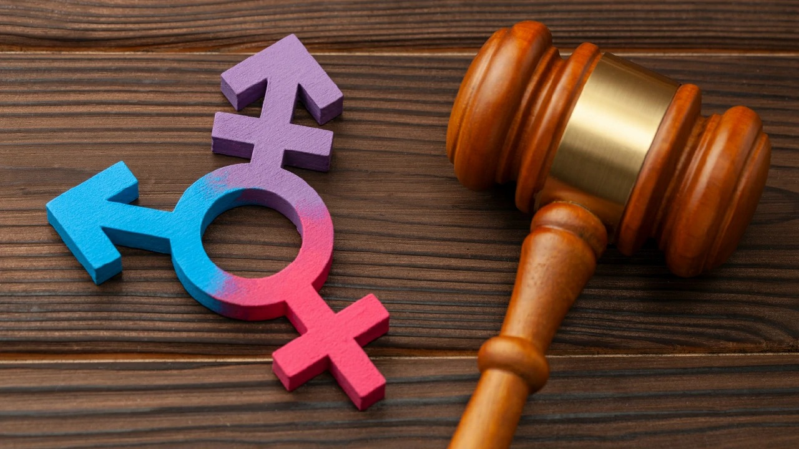

Video de la Iniciativa ODS 5
Este video presenta una visión general de nuestros proyectos y el impacto de las acciones para promover la equidad de género en el ámbito educativo, laboral y comunitario.
La igualdad de género es un derecho humano fundamental y un requisito esencial para un desarrollo sostenible saludable y equitativo.
Conoce los objetivosLa Organización Mundial de la Salud (OMS) apoya la agenda de la ONU para:

Una visión general de nuestros proyectos y el impacto de las acciones para promover la equidad de género en el ámbito educativo, laboral y comunitario.
Este video presenta una visión general de nuestros proyectos y el impacto de las acciones para promover la equidad de género en el ámbito educativo, laboral y comunitario.
El acceso a servicios de salud de calidad reduce la mortalidad materna y protege los derechos de las mujeres en el embarazo, el parto y la planificación familiar.
Invertir en programas de prevención de la violencia de género mejora la seguridad, el bienestar mental y las oportunidades de las mujeres y niñas.
Promover la representación equitativa en política, empresas y comunidades fortalece las decisiones de salud pública y desarrollo sostenible.